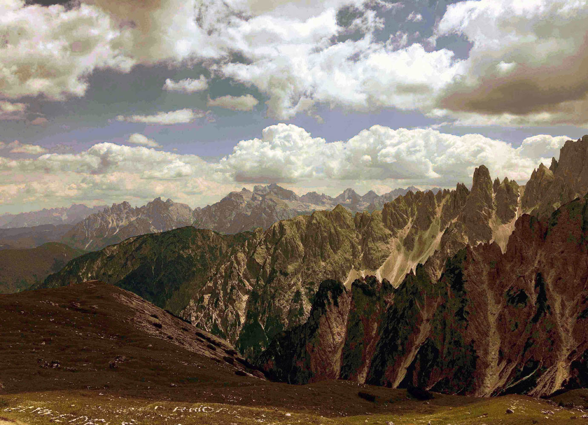
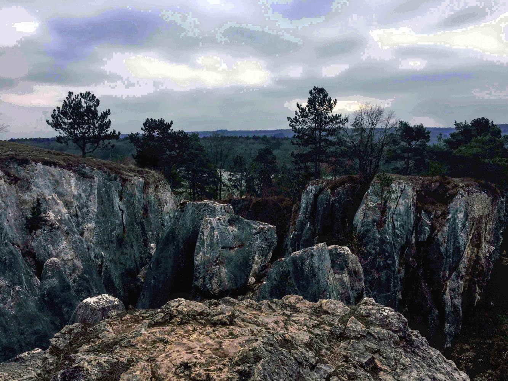
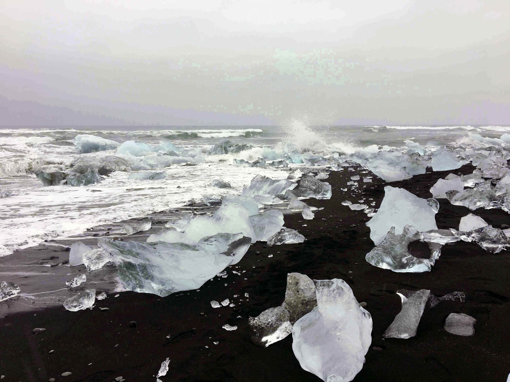
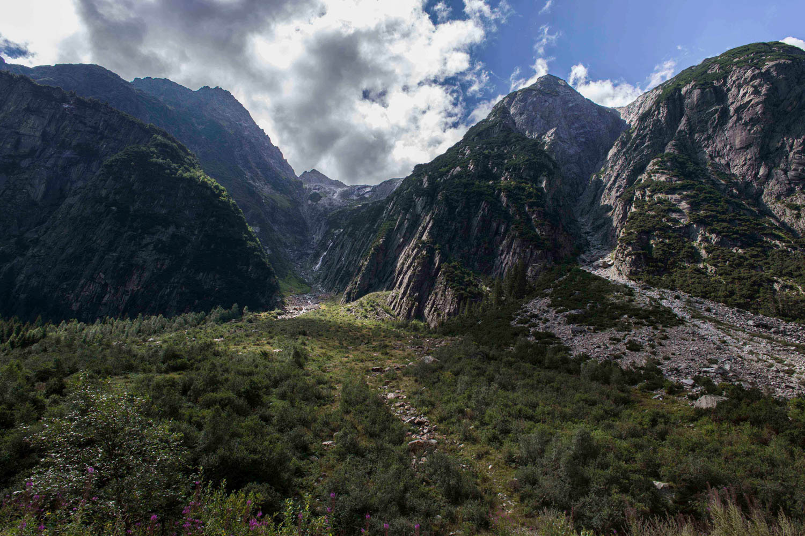

<!DOCTYPE html>
<html >
<head>
  <!-- Site made with Mobirise Website Builder v4.8.4, https://mobirise.com -->
  <meta charset="UTF-8">
  <meta http-equiv="X-UA-Compatible" content="IE=edge">
  <meta name="generator" content="Mobirise v4.8.4, mobirise.com">
  <meta name="viewport" content="width=device-width, initial-scale=1, minimum-scale=1">
  <link rel="shortcut icon" href="assets/images/logo2.png" type="image/x-icon">
  <meta name="description" content="pixel foto's">
  <title>utopische landschappen</title>
  <link rel="stylesheet" href="assets/web/assets/mobirise-icons/mobirise-icons.css">
  <link rel="stylesheet" href="assets/tether/tether.min.css">
  <link rel="stylesheet" href="assets/bootstrap/css/bootstrap.min.css">
  <link rel="stylesheet" href="assets/bootstrap/css/bootstrap-grid.min.css">
  <link rel="stylesheet" href="assets/bootstrap/css/bootstrap-reboot.min.css">
  <link rel="stylesheet" href="assets/dropdown/css/style.css">
  <link rel="stylesheet" href="assets/theme/css/style.css">
  <link rel="stylesheet" href="assets/mobirise/css/mbr-additional.css" type="text/css">
  
  
  
</head>
<body>

<!-- Google Analytics -->
<!-- Global site tag (gtag.js) - Google Analytics -->
<script async src="https://www.googletagmanager.com/gtag/js?id=UA-126751980-1"></script>
<script>
  window.dataLayer = window.dataLayer || [];
  function gtag(){dataLayer.push(arguments);}
  gtag('js', new Date());

  gtag('config', 'UA-126751980-1');
</script>

<!-- /Google Analytics -->


  <section class="menu cid-r8wgUMLGff" once="menu" id="menu1-n">

    

    <nav class="navbar navbar-expand beta-menu navbar-dropdown align-items-center navbar-fixed-top navbar-toggleable-sm">
        <button class="navbar-toggler navbar-toggler-right" type="button" data-toggle="collapse" data-target="#navbarSupportedContent" aria-controls="navbarSupportedContent" aria-expanded="false" aria-label="Toggle navigation">
            <div class="hamburger">
                <span></span>
                <span></span>
                <span></span>
                <span></span>
            </div>
        </button>
        <div class="menu-logo">
            <div class="navbar-brand">
                
                
            </div>
        </div>
        <div class="collapse navbar-collapse" id="navbarSupportedContent">
            <ul class="navbar-nav nav-dropdown nav-right navbar-nav-top-padding" data-app-modern-menu="true"><li class="nav-item">
                    <a class="nav-link link text-black display-4" href="index.html">HOME</a>
                </li><li class="nav-item">
                    <a class="nav-link link text-black display-4" href="page3.html">BIOGRAFIE</a>
                </li><li class="nav-item"><a class="nav-link link text-black display-4" href="page8.html">EXPOGRAFIE</a></li><li class="nav-item"><a class="nav-link link text-black display-4" href="page5.html">INSTAGRAM</a></li><li class="nav-item"><a class="nav-link link text-black display-4" href="page4.html">CONTACT</a></li></ul>
            
        </div>
    </nav>
</section>

<section class="engine"><a href="https://mobirise.info/l">free website templates</a></section><section class="header1 cid-r7dJaX3gUi" id="header1-b">

    

    

    <div class="container">
        <div class="row justify-content-md-center">
            <div class="mbr-white col-md-10">
                <h1 class="mbr-section-title align-center mbr-bold pb-3 mbr-fonts-style display-5"><span style="font-weight: normal;">Utopische landschappen</span></h1>
                
                <p class="mbr-text align-center pb-3 mbr-fonts-style display-7">Een fascinatie voor het schone dat soms net niet genoeg is, is Anke haar drijfveer om een nieuw landschap tecreëren. 

Anke gaat op zoek naar de grens tussen de realiteit
en het onbekende, 
verzonnen landschap door 
digitale, repetitieve 
handelingen uit te voeren.<br></p>
                
            </div>
        </div>
    </div>

</section>

<section class="carousel slide cid-riqgNCmRHP" data-interval="false" id="slider2-11">

    
    <div class="container content-slider">
        <div class="content-slider-wrap">
            <div><div class="mbr-slider slide carousel" data-pause="true" data-keyboard="false" data-ride="carousel" data-interval="5000"><ol class="carousel-indicators"><li data-app-prevent-settings="" data-target="#slider2-11" data-slide-to="0"></li><li data-app-prevent-settings="" data-target="#slider2-11" data-slide-to="1"></li><li data-app-prevent-settings="" data-target="#slider2-11" class=" active" data-slide-to="2"></li><li data-app-prevent-settings="" data-target="#slider2-11" data-slide-to="3"></li></ol><div class="carousel-inner" role="listbox"><div class="carousel-item slider-fullscreen-image" data-bg-video-slide="false" style="background-image: url(assets/images/landschappen-3-van-6.jpg);"><div class="container container-slide"><div class="image_wrapper"><div class="carousel-caption justify-content-center"><div class="col-10 align-center"></div></div></div></div></div><div class="carousel-item slider-fullscreen-image" data-bg-video-slide="false" style="background-image: url(assets/images/landschappen-5-van-6.jpg);"><div class="container container-slide"><div class="image_wrapper"><div class="carousel-caption justify-content-center"><div class="col-10 align-center"></div></div></div></div></div><div class="carousel-item slider-fullscreen-image active" data-bg-video-slide="false" style="background-image: url(assets/images/landschappen-2-van-6.jpg);"><div class="container container-slide"><div class="image_wrapper"><div class="carousel-caption justify-content-center"><div class="col-10 align-center"></div></div></div></div></div><div class="carousel-item slider-fullscreen-image" data-bg-video-slide="false" style="background-image: url(assets/images/landschappen-1-van-6.jpg);"><div class="container container-slide"><div class="image_wrapper"><div class="mbr-overlay" style="opacity: 0;"></div><div class="carousel-caption justify-content-center"><div class="col-10 align-center"></div></div></div></div></div></div><a data-app-prevent-settings="" class="carousel-control carousel-control-prev" role="button" data-slide="prev" href="#slider2-11"><span aria-hidden="true" class="mbri-left mbr-iconfont"></span><span class="sr-only">Previous</span></a><a data-app-prevent-settings="" class="carousel-control carousel-control-next" role="button" data-slide="next" href="#slider2-11"><span aria-hidden="true" class="mbri-right mbr-iconfont"></span><span class="sr-only">Next</span></a></div></div> 
        </div>
    </div>
</section>

<section class="mbr-section content4 cid-riqi1bUiJd" id="content4-12">

    

    <div class="container">
        <div class="media-container-row">
            <div class="title col-12 col-md-8">
                <h2 class="align-center pb-3 mbr-fonts-style display-2">"Ce paysage dont parfois, la nuit dans ses rêves, l’individualité l’étreint avec une puissance presque fantastique et qu’il ne peut plus retrouver au réveil."<br><br></h2>
                <h3 class="mbr-section-subtitle align-center mbr-light mbr-fonts-style display-4">Marcel Proust<br> 'A la recherche du temps perdu, Du côté de chez Swann' &nbsp;&nbsp;</h3>
                
            </div>
        </div>
    </div>
</section>


  <script src="assets/web/assets/jquery/jquery.min.js"></script>
  <script src="assets/popper/popper.min.js"></script>
  <script src="assets/tether/tether.min.js"></script>
  <script src="assets/bootstrap/js/bootstrap.min.js"></script>
  <script src="assets/smoothscroll/smooth-scroll.js"></script>
  <script src="assets/ytplayer/jquery.mb.ytplayer.min.js"></script>
  <script src="assets/touchswipe/jquery.touch-swipe.min.js"></script>
  <script src="assets/dropdown/js/script.min.js"></script>
  <script src="assets/bootstrapcarouselswipe/bootstrap-carousel-swipe.js"></script>
  <script src="assets/vimeoplayer/jquery.mb.vimeo_player.js"></script>
  <script src="assets/theme/js/script.js"></script>
  <script src="assets/slidervideo/script.js"></script>
  
  
</body>
</html>